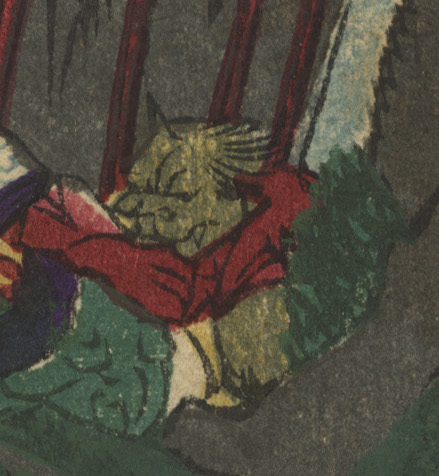

岩の陰にみえる黄色い鬼。一角で、顔は獣のようである。
著作者：橋本直義／出典：親書誌：U426_nichibunken_0314：源頼光大江山鬼人退治；ミナモト ライコウ オオエヤマ キジン タイジ／日付：2014／資源識別子：U426_nichibunken_0314_0009_0000
Copyright (c)2010- International Research Center for Japanese Studies, Kyoto, Japan. All rights reserved.